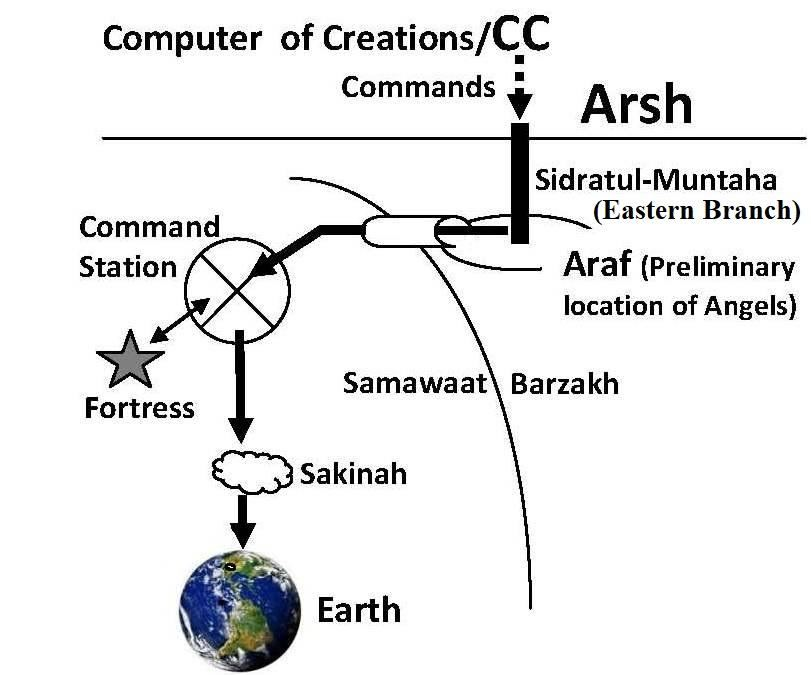

The Surah talks about the descent of the Quran.
সূরাটি কুরআনের অবতরণ সম্পর্কে কথা বলে।
Tafsir of the Surah We have indeed revealed this in the Night of Power
সূরার তাফসীর আমরা প্রকৃতপক্ষে এটি মহাশক্তিতে নাযিল করেছি
The Quran was written in the Lawh-Mahfuz, located in the Arsh, billions of light years away from the Earth. How did it come down? The Lawh-Mahfuz sent the Quran to its main server, Sidratul-Muntaha. Subsequently, the Sidratul-Muntaha sent the verses (ruhs) through the angels. Initially, they arrived at the 'Command Station' of the First (Innermost) Sky.
পৃথিবী থেকে কোটি কোটি আলোকবর্ষ দূরে আরশে অবস্থিত লহ-মাহফুজে কুরআন লেখা হয়েছে। এটা কিভাবে নেমে এল? লাওহ-মাহফুজ কুরআনকে তার প্রধান সার্ভার সিদরাতুল মুনতাহাতে পাঠিয়েছিলেন। পরবর্তীতে সিদরাতুল মুনতাহা ফেরেশতাদের মাধ্যমে আয়াত (রূহ) প্রেরণ করেন। প্রাথমিকভাবে, তারা প্রথম (অভ্যন্তরীণ) আকাশের 'কমান্ড স্টেশনে' পৌঁছেছিল।
―Allah is He Who created Seven Skies and the Lands (Command Stations) an equivalent (seven). Through the midst of them descends His command that ye may know that Allah has power over all things, and that comprehends all things in knowledge.‖ [Al Quran 65:12]
-আল্লাহ তিনিই সৃষ্টি করেছেন সাত আকাশ ও ভূমি (কমান্ড স্টেশন) সমতুল্য (সাতটি)। তাদের মধ্য দিয়ে তাঁর হুকুম অবতীর্ণ হয় যাতে তোমরা জানতে পার যে, আল্লাহ সব কিছুর উপর ক্ষমতাবান এবং তিনি সবকিছুকে জ্ঞানে পরিপূর্ণ করেন।'' [আল কুরআন 65:12]
I refer to these realms, through which the commands of Allah are descended, as "Command Stations. The angels and commands (ruhs) are sent down to the Command Stations in groups, each spanning a thousand years.
আমি এই রাজ্যগুলিকে উল্লেখ করি, যার মাধ্যমে আল্লাহর আদেশ অবতীর্ণ হয়, "কমান্ড স্টেশন। ফেরেশতা এবং আদেশ (রুহ) দলে দলে কমান্ড স্টেশনগুলিতে নাযিল হয়, প্রতিটি হাজার বছর ব্যাপী।
―He rules affairs from the skies to the earth; in the end will go up to Him in a Day—measure a thousand years of your reckoning.‖ [Al Quran 32: 5]
তিনি আকাশ থেকে পৃথিবী পর্যন্ত শাসন করেন; শেষ পর্যন্ত একদিনে তাঁর কাছে যাবে - আপনার হিসাব এক হাজার বছরের পরিমাপ করুন।'' [আল কুরআন 32:5]
―...Verily a day in the sight of thy Lord is like a thousand-year of your reckoning.‖ [Al Quran 22: 47]
"...নিশ্চয়ই তোমার পালনকর্তার কাছে একটি দিন তোমার হিসাব-নিকাশের হাজার বছরের সমান।" [আল কুরআন 22:47]
And what will explain to thee what the Night of Power is? The Night of Power is better than a thousand months. Therein come down the angels and the ruh by God's permission for every matter. Peace! This until the rise of morn!
এবং কি আপনাকে ব্যাখ্যা করবে শক্তির রাত কি? কুদরতের রাত হাজার মাসের চেয়েও উত্তম। সেখানে প্রতিটি বিষয়ে আল্লাহর অনুমতিক্রমে ফেরেশতা ও রুহ নেমে আসে। শান্তি ! এই ভোর না হওয়া পর্যন্ত!
The angels and ruhs destined to monitor the affairs of a thousand years descend to the Command Stations in groups, each corresponding to one thousand years. The angels are stationed in the nearby fortresses (star- like objects), while the ruhs are preserved in the server computers of the Command Stations. Subsequently, the angels and ruhs are regrouped into packets of 1,000 months (approximately eighty-three years) and transported by "Sakinah" near the job stations. A Sakinah is a cloud of angels and ruhs, assigned to monitor the affairs of 1,000 months. FIGURE 97.1: The Cybernetic System

চিত্র 97_1 / Figure 97_1
এক হাজার বছরের বিষয়গুলি পর্যবেক্ষণ করার জন্য নির্ধারিত ফেরেশতা এবং রুহ দলে দলে কমান্ড স্টেশনগুলিতে নেমে আসে, প্রতিটি এক হাজার বছরের সাথে সম্পর্কিত। ফেরেশতারা নিকটবর্তী দুর্গগুলিতে (তারা-সদৃশ বস্তু) অবস্থান করে, যখন রুহগুলি কমান্ড স্টেশনগুলির সার্ভার কম্পিউটারগুলিতে সংরক্ষিত থাকে। পরবর্তীকালে, ফেরেশতা এবং রুহদের 1,000 মাসের (প্রায় 83 বছর) প্যাকেটে পুনরায় সংগঠিত করা হয় এবং "সাকিনাহ" দ্বারা জব স্টেশনগুলির কাছে পরিবহন করা হয়। একটি সাকিনাহ হল ফেরেশতা এবং রুহদের একটি মেঘ, 1,000 মাসের বিষয়গুলি পর্যবেক্ষণ করার জন্য নিযুক্ত করা হয়েছে। চিত্র 97.1: সাইবারনেটিক সিস্টেম
চিত্র 97_1 / Figure 97_1
The Sakinah, carrying the complete Quran and the related angels, descended near the Earth on the Night of Power. The verses of the Quran came as ruhs (brain data / electric pulses) designed to create memories in the Prophet's (pbuh) brain. The angels directly implanted these ruhs into his brain through a special path. The entry point of this path manifested as a swollen muscle (Mohr- e-Nubuwat) on the Prophet's (pbuh) backbone, just below his neck.
সাকিনা, সম্পূর্ণ কুরআন এবং সংশ্লিষ্ট ফেরেশতাদের বহন করে, শক্তির রাতে পৃথিবীর কাছাকাছি অবতরণ করেছিল। কুরআনের আয়াতগুলো এসেছে রুহস (মস্তিষ্কের তথ্য/বৈদ্যুতিক স্পন্দন) হিসেবে যা নবী (সাঃ) এর মস্তিষ্কে স্মৃতি তৈরি করার জন্য ডিজাইন করা হয়েছে। ফেরেশতারা সরাসরি একটি বিশেষ পথের মাধ্যমে এই রুহগুলি তার মস্তিষ্কে স্থাপন করেছিলেন। এই পথের প্রবেশ বিন্দুটি তার ঘাড়ের ঠিক নীচে, নবী (সাঃ) এর মেরুদণ্ডে একটি ফোলা পেশী (মোহর-ই-নুবুওয়াত) হিসাবে প্রকাশিত হয়েছিল।